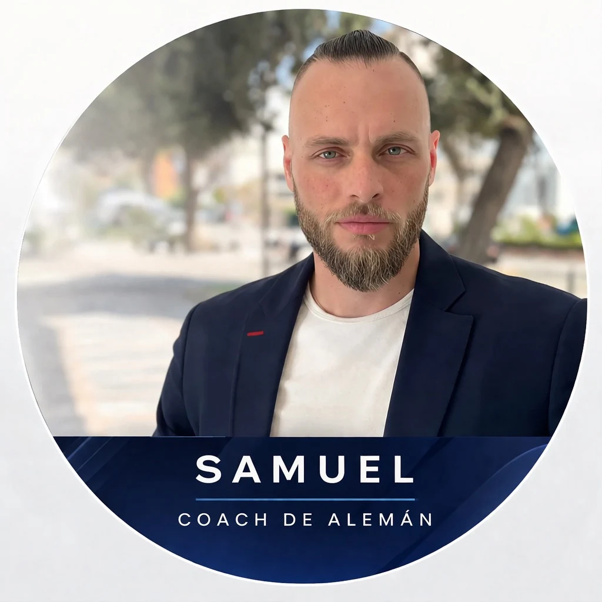

- Grupos grandes
- Ritmo lento
- Mucha teoría
- Poco enfoque laboral real
Willkommen bei Samuel Coach de alemán
Clases de alemán online desde Fuengirola para hablar con fluidez
Aprende alemán online con un método claro, cercano y adaptado a tu objetivo. Te ayudo con alemán conversacional, refuerzo escolar, cursos de integración, preparación Goethe y TELC, y alemán para trabajar en Alemania desde Fuengirola para toda España.
Empieza por ver mis servicios, descubre cómo trabajo o entra en mis apps para practicar alemán.

Alemán desde Cero
Niveles A1-A2. Entiende y habla desde el primer día de forma práctica.
Ver detalles ↓Ámbito Profesional
CV, cartas de presentación y preparación clave para trabajar en Alemania/Suiza.
Ver detalles ↓Conversación y Exámenes
Fluidez real, niveles B1-C1 y preparación específica para el FSP Prüfung.
Ver detalles ↓¿Por qué trabajar con un coach de alemán?
A tu ritmo, con un plan adaptado a ti: desde alemán escolar e integración hasta objetivos profesionales, conversación y exámenes.
- Trabajo 1 a 1
- Plan adaptado a tu objetivo
- Refuerzo de alemán escolar y apoyo individualizado
- Experiencia con alumnos de Salliver, colegios internacionales y Deutsche Schule
- Cursos de integración y adaptación, sin relleno
🏆 Éxito 100% Garantizado
Aprende alemán gracias a mis 3 claves
Da igual cuáles sean tus metas y tu situación, juntos alcanzaremos tus objetivos.
🎯
Experiencia y dedicación
La enseñanza es mi pasión y eso se transmite en cada clase. Más de 171 reseñas de 5 estrellas lo avalan.
🧠
Aprendizaje práctico
Entrenarás tu mente aprendiendo alemán de forma efectiva, con énfasis en aspectos útiles para la vida real.
📋
Objetivos individualizados
Un plan de estudios diseñado para ti, basado en tus metas personales, tu nivel y tu ritmo de aprendizaje.
Lo que dicen mis alumnos
Reseñas verificadas en Google y Superprof.
★★★★★
Google
"Las clases son muy dinámicas y personalizadas. Samuel se adapta perfectamente a mi nivel y avanzamos a buen ritmo. Lo recomiendo sin duda."
★★★★★
Superprof
"Samuel explica muy bien, adapta cada clase a lo que necesito y siempre resuelve mis dudas. En pocos meses noté un avance increíble."
★★★★★
Google
"Muy buen profesor, explica con mucha paciencia y claridad. Empecé desde cero y en 6 meses ya mantengo conversaciones básicas. Increíble."
★★★★★
Superprof
"Preparé el Goethe B2 con Samuel y lo aprobé a la primera. Su método es muy práctico y las clases son dinámicas. Totalmente recomendable."
★★★★★
Google
"Buscaba un profesor para preparar el TELC y Samuel fue la mejor elección. Muy organizado, puntual y con materiales excelentes."
★★★★★
Superprof
"Llevaba años intentando aprender alemán sin éxito. Con Samuel encontré el método que necesitaba. Ahora trabajo en Alemania."
Entrada reciente del blog
Aquí encontrarás todo lo que necesitas para aprender alemán y la vida en Alemania.
🇩🇪
Gramática
¿Sabías esto del TEKAMOLO? El truco que cambia tu alemán para siempre
El TEKAMOLO es una de las reglas más importantes del alemán y una de las menos conocidas. Descubre cómo dominarla y construir frases perfectas desde hoy.
Leer artículo →Preguntas frecuentes
¿Cómo son las clases de alemán online?
Las clases se realizan por videollamada (Zoom, Meet o similar). Son totalmente personalizadas: trabajamos con materiales adaptados a tu nivel y objetivos. Antes de empezar hacemos una sesión de evaluación gratuita.
¿Desde qué nivel puedo empezar?
Desde cero absoluto hasta nivel avanzado (C1). Tanto si nunca has estudiado alemán como si quieres perfeccionar lo que ya sabes, adaptamos el programa a tu punto de partida.
¿Cuánto tiempo se tarda en aprender alemán?
Depende de tu nivel de partida, tu objetivo y la frecuencia de las clases. Con dos clases semanales y práctica diaria, en 3-6 meses se notan avances muy significativos. Lo hablamos en la sesión inicial.
¿Me ayudas a prepararme para el examen Goethe / TELC?
Sí. Ofrezco preparación específica para todos los niveles de Goethe (A1 a C2), TELC, DSD y otros certificados reconocidos internacionalmente. El enfoque está en los cuatro componentes: comprensión lectora, auditiva, expresión escrita y oral.
¿Cuáles son las condiciones de pago?
Primeras dos clases: el pago se realiza antes de cada sesión, con un mínimo de 24 horas de antelación. Si el pago no se ha efectuado 12 horas antes del inicio, me reservo el derecho de cancelar la clase para gestionar mi agenda.
A partir de la tercera clase: la facturación es mensual y anticipada, calculada sobre el total de horas del mes. Este sistema garantiza la reserva de tu horario.
Métodos aceptados: transferencia bancaria o Bizum, según lo acordado previamente.
A partir de la tercera clase: la facturación es mensual y anticipada, calculada sobre el total de horas del mes. Este sistema garantiza la reserva de tu horario.
Métodos aceptados: transferencia bancaria o Bizum, según lo acordado previamente.
¿Cuál es la política de cancelaciones?
Cancelaciones del alumno:
— Con más de 24 horas de antelación: la clase es recuperable y se reprograma según disponibilidad de ambas partes.
— Con menos de 24 horas: la clase no es recuperable. Si el profesor no tiene disponibilidad en el plazo acordado, el importe se descontará del mes siguiente.
— Las cancelaciones reiteradas pueden suponer la pérdida del horario fijo y, en casos extremos, la rescisión del servicio.
Cancelaciones por mi parte:
— Con más de 24 horas: la clase se recupera según disponibilidad o se descuenta su importe.
— Con menos de 24 horas: se reprograma si hay disponibilidad; en caso contrario, se descuenta.
— Si cancelo dos veces con menos de 12 horas de antelación, recibirás una clase adicional completamente gratuita, además de la recuperación de la clase cancelada.
— Con más de 24 horas de antelación: la clase es recuperable y se reprograma según disponibilidad de ambas partes.
— Con menos de 24 horas: la clase no es recuperable. Si el profesor no tiene disponibilidad en el plazo acordado, el importe se descontará del mes siguiente.
— Las cancelaciones reiteradas pueden suponer la pérdida del horario fijo y, en casos extremos, la rescisión del servicio.
Cancelaciones por mi parte:
— Con más de 24 horas: la clase se recupera según disponibilidad o se descuenta su importe.
— Con menos de 24 horas: se reprograma si hay disponibilidad; en caso contrario, se descuenta.
— Si cancelo dos veces con menos de 12 horas de antelación, recibirás una clase adicional completamente gratuita, además de la recuperación de la clase cancelada.
¿Cuál es el precio de las clases?
El precio varía según el tipo de clase y la frecuencia. Contáctame directamente para recibir una propuesta personalizada sin compromiso.
Hablemos sin compromiso
Cuéntame tu situación y diseñamos juntos el mejor plan para que consigas tu objetivo en alemán.
📍 Fuengirola, Málaga, España · Clases 100% online